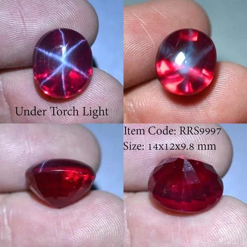

變色藍寶石：白天藍、晚上紫的魔術師
同一顆藍寶石，白天是藍色、燈下變紫色——釩元素的魔術，讓寶石有了兩種人格。

核心定義
變色藍寶石（color change sapphire）在日光（含紫外光）下呈現藍色或藍紫色，在白熾燈（鎢絲燈）下則轉為紫色、紫紅甚至紅紫色——這是「變色效應」在藍寶石上的體現，與亞歷山大石的原理相同，只是變色範圍不同。
變色的來源是釩（vanadium，V）元素：釩離子取代晶格中的鋁後，產生兩個吸收窗口，一個吸收黃綠段、一個吸收藍段——光源色溫不同，看到的顏色就不同。含釩的藍寶石還有「釩致色」的專有名詞，與鐵鈦致色的普通藍寶不同。
特徵與分類
| 光源 | 典型顏色 | 機制 |
|---|---|---|
| 日光（高色溫） | 藍、藍紫 | 釩吸收藍段較弱→偏藍 |
| 鎢絲燈（低色溫） | 紫、紫紅 | 釩吸收黃綠段→偏紅紫 |
| LED 混合光 | 藍紫之間 | 依光源成分變化 |
變色的「強度」是價值的關鍵：日光下藍、燈下紫的「雙色」越分明，越稀有、越值錢；只從藍紫變到藍灰的微弱變色，價值有限。極品變色藍寶在燈下可達紫紅甚至粉紅——被形容為「窮人的亞歷山大石」。
科學原理
變色效應的科學是「雙吸收窗口」：釩離子在晶格中同時吸收互補色段的兩組波長，讓寶石對「紅光多的光源」（燈泡）與「藍光多的光源」（日光）呈現相反色調。寶石學上，色溫每變動幾百 K，變色寶石的顏色就跳一格。
變色藍寶的產地多為斯里蘭卡與馬達加斯加，常與帕帕拉恰共生（同為釩鉻作用的剛玉家族）。它也常被加熱以增強變色，因此無燒變色藍寶更為稀有。
鑑定與鑑別方法
- 在日光與鎢絲燈兩種光源下各看一次，記錄顏色
- 用分光鏡確認釩的吸收譜線
- 確認變色方向：藍↔紫是釩致色特徵
- 檢查加熱：加熱可增強變色，證書要揭露
- 區分亞歷山大石：那是金綠寶石家族，硬度與成分不同
市場行情與保養建議
變色藍寶石是藍寶石中的「性格寶石」，近年藏家關注度上升：變色明顯、色調漂亮的標本價格節節攀升，但整體仍遠低於亞歷山大石——對想收藏「會變色」寶石的買家，它是高性價比入口。
挑選重點：變色強度第一（雙色分明）、顏色美感第二、克拉與淨度第三。無燒加權威證書是收藏級的基本配置。
常見誤區
不同寶石家族：亞歷山大石是金綠寶石（硬度 8.5），變色藍寶石是剛玉（硬度 9）。原理相同，成分不同，價格更是天壤之別。
普通鐵鈦致色藍寶在不同光下只是「明暗」變化，不會「藍變紫」。真正的變色需要釩元素與雙吸收窗口——這是少數藍寶的專利。
冷知識
亞歷山大石的鉻、變色藍寶的釩，都是靠雙吸收窗口製造「變色」。元素週期表裡的一個格，決定了寶石會不會魔術。
黃昏的天光是日光與燈光的混合，變色藍寶會呈現藍紫交織的「過渡色」——收藏家稱這段時間為「魔法時刻」。
反直覺觀點
寶石學追求顏色穩定，但變色寶石以「會變」為賣點——藍天的藍、夜燈的紫，是同一顆石頭的兩種性格。不穩定，在這裡成了稀有。
原理相近、價格差百倍——因為亞歷山大石更稀有、文化敘事更強。變色藍寶是「功能相近、價格親民」的替代入口，性價比極高。